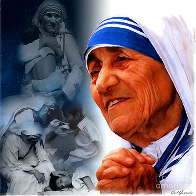

MOTHER TERESA
Mother Teresa was the founder of the Order of the Missionaries of Charity, a Roman Catholic congregation of women dedicated to helping the poor. Considered one of the 20th Century's greatest humanitarians,she was canonized as Saint Teresa of Calcutta in 2016.
Who is mother Teresa?
Nun and missionary Mother Teresa, known in the Catholic church as Saint Teresa of Calcutta, devoted her life to caring for the d poor. Born in Macedonia to parents of Albanian-descent and having taught in India for 17 years, Mother Teresa experienced her "call within a call" in 1946. Her order established a hospice; centers for the blind, aged and disabled; and a leper colony.In 1979, Mother Teresa received the Nobel Peace Prize for her humanitarian work. She died in September 1997 and was beatified in October 2003. In December 2015, Pope Francis recognized a second miracle attributed to Mother Teresa, clearing the way for her to be canonized on September 4, 2016.
- Full name:Agnes Gonxha Bojaxhiu
- Born:August 27, 1910
- Died:September 4, 2016
- Cause of Death: Heart failure
In 1979, Mother Teresa received the Nobel Peace Prize for her humanitarian work. She died in September 1997 and was beatified in October 2003. In December 2015, Pope Francis recognized a second miracle attributed to Mother Teresa, clearing the way for her to be canonized on September 4, 2016.
Mother Teresa’s Family and Young Life
Mother Teresa was born on August 26, 1910, in Skopje, the current capital of the Republic of Macedonia. The following day, she was baptized as Agnes Gonxha Bojaxhiu.
Mother Teresa’s parents, Nikola and Dranafile Bojaxhiu, were of Albanian descent; her father was an entrepreneur who worked as a construction contractor and a trader of medicines and other goods. The Bojaxhius were a devoutly Catholic family, and Nikola was deeply involved in the local church as well as in city politics as a vocal proponent of Albanian independence.
In 1919, when Mother Teresa — then Agnes — was only eight years old, her father suddenly fell ill and died. While the cause of his death remains unknown, many have speculated that political enemies poisoned him.
In the aftermath of her father's death, Agnes became extraordinarily close to her mother, a pious and compassionate woman who instilled in her daughter a deep commitment to charity. Although by no means wealthy, Drana Bojaxhiu extended an open invitation to the city's destitute to dine with her family. "My child, never eat a single mouthful unless you are sharing it with others," she counseled her daughter. When Agnes asked who the people eating with them were, her mother uniformly responded, "Some of them are our relations, but all of them are our people."
Education and Nunhood
Agnes attended a convent-run primary school and then a state-run secondary school. As a girl, she sang in the local Sacred Heart choir and was often asked to sing solos. The congregation made an annual pilgrimage to the Church of the Black Madonna in Letnice, and it was on one such trip at the age of 12 that she first felt a calling to religious life. Six years later, in 1928, an 18-year-old Agnes Bojaxhiu decided to become a nun and set off for Ireland to join the Sisters of Loreto in Dublin. It was there that she took the name Sister Mary Teresa after Saint Thérèse of Lisieux.
A year later, Sister Mary Teresa traveled on to Darjeeling, India, for the novitiate in May 1931, she made her First Profession of Vows. Afterward, she was sent to Calcutta, where she was assigned to teach at Saint Mary's High School for Girls, a school run by the isters and dedicated to teaching girls from the city's poorest Bengali families. Sister Teresa learned to speak both Bengali and Hindi fluently as she taught geography and history and dedicated herself to alleviating the girls' poverty through education.
On May 24, 1937, she took her Final Profession of Vows to a life of poverty, chastity and obedience. As was the custom for Loreto nuns, she took on the title of "Mother" upon making her final vows and thus became known as Mother Teresa. Mother Teresa continued to teach at Saint Mary's, and in 1944 she became the school's principal. Through her kindness, generosity and unfailing commitment to her students' education, to lead them to a life of devotion to Christ. "Give me the strength to be ever the light of their lives, so that I may lead them at last to you," she wrote in prayer.